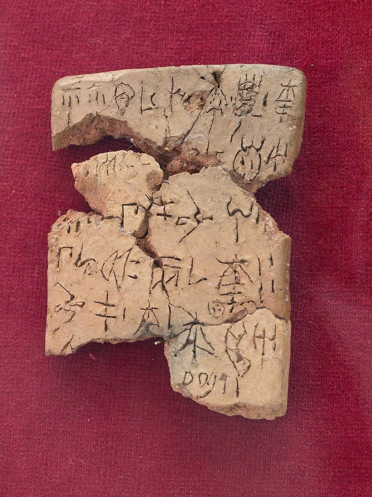

Um engenheiro diz ter decifrado o Linear A com ajuda de IA. A academia investiga
O Linear A, a escrita da civilização minoica que resiste aos estudiosos há mais de um século, teria sido decifrado por um autodidata com apoio de inteligência artificial. A alegação é forte, e ainda está sob revisão de especialistas.

Poucos enigmas resistem tanto quanto o Linear A. É a escrita usada pela civilização minoica, em Creta, há cerca de 3.500 anos. Diferente do Linear B (que foi decifrado nos anos 1950 e revelou uma forma antiga de grego), o Linear A nunca foi lido: sabemos o som de muitos sinais, mas não a língua por trás deles. Agora, um nome improvável entra na história.
Tom Di Mino, um engenheiro autodidata do interior de Nova York que estuda línguas e história antiga desde os 18 anos e domina idiomas como grego ático, latim, sânscrito e árabe, afirma ter encontrado a chave. Depois de sete anos debruçado sobre o tema e duas viagens a Creta, ele diz que a virada veio em maio de 2026, ao analisar fórmulas religiosas que se repetiam em inscrições de cinco santuários de montanha. A hipótese dele é ousada: o Linear A não registraria uma língua isolada, e sim uma língua semítica extinta, aparentada de ancestrais do hebraico. Ele publicou um estudo de 41 páginas com um léxico de 508 entradas, leituras para 42 sinais e 443 traduções.
Dois pontos merecem cautela, e a própria reportagem internacional os destaca. Primeiro: parte do trabalho foi feita com ajuda de ferramentas de inteligência artificial, boas para testar em minutos se um palpite sobre um sinal se sustenta em todo o acervo, algo que levaria anos à mão. Segundo, e mais importante: isso é uma alegação, não um consenso. O estudo está sendo examinado por linguistas de universidades como Rutgers e Cambridge, ainda não passou por revisão por pares e não foi confirmado. A história do Linear A é cheia de "decifrações" anunciadas que não se sustentaram.
Por que isso importa no Brasil
Além do fascínio de um mistério de milênios talvez perto de cair, o caso é uma boa aula de como a ciência funciona e de como ler notícias com IA no meio. Uma ferramenta pode acelerar o trabalho e sugerir caminhos, mas quem valida é a comunidade de especialistas, com revisão por pares. Vale para línguas antigas e vale para qualquer manchete que promete uma grande virada: entusiasmo com uma dose de "vamos esperar a checagem". No Brasil, onde há bons grupos de estudos clássicos e linguística, esse debate encontra gente preparada para acompanhar de perto.
Gostou? Receba as próximas.
As notícias internacionais que importam, em português, uma vez por semana.
Assinar a newsletter